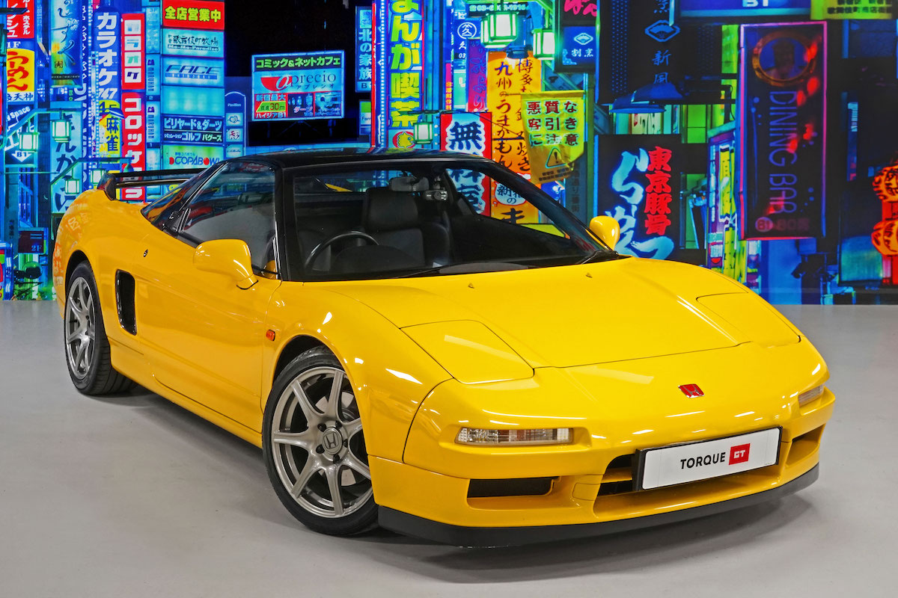
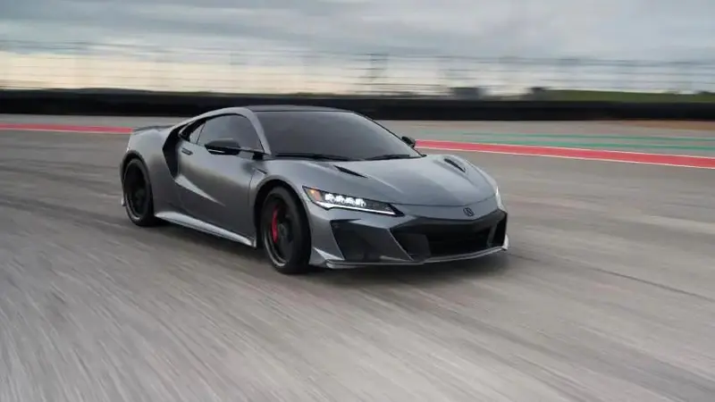

galleria


.jpg)


"Carro do Senna" e "Ferrari japonesa": esses são apenas dois dos apelidos do Honda NSX, que está completando 30 anos. O primeiro superesportivo da marca encheu os olhos dos fãs de carros e também do Ayrton Senna. O tricampeão de Fórmula 1 foi proprietário de uma das únicas unidades do modelo registradas no Brasil. O carro foi mantido pela família do piloto brasileiro e está em perfeito estado de conservação até hoje.
Apresentado durante o Salão de Chicago, em 1989, o NSX começou a ser vendido oficialmente no ano seguinte, 1990. Seu nome é uma abreviação de "New Sportscar eXperimental" (Experimental tem som de X no início da palavra, em inglês). Vale lembrar também que, apesar de ser chamado de Honda NSX para mercados internacionais, nos EUA, onde surgiu, era vendido como Acura NSX. A Acura é a marca de luxo da Honda, e ele foi criado como uma demanda da nova divisão.
O modelo tinha uma série de inovações à época: carroceria 100% em alumínio e motor também desenvolvido com a mesma liga. Diferentemente do que se espera hoje de um legítimo Honda, ele não tinha o sistema VTEC, sistema de variação de abertura das válvulas, já integrado ao projeto.